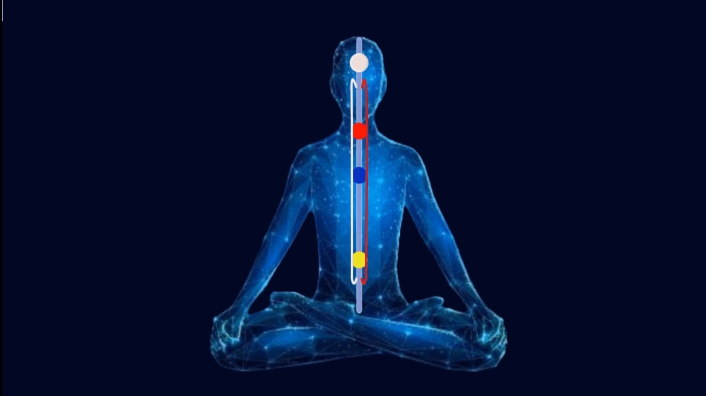
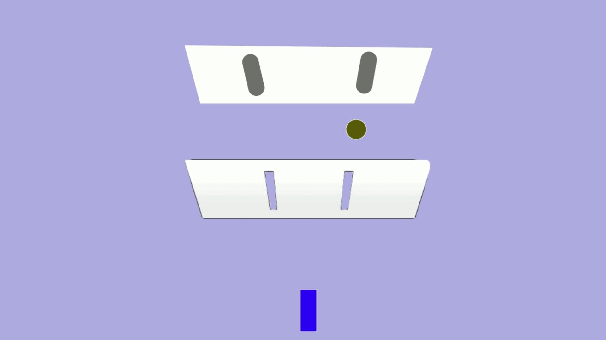
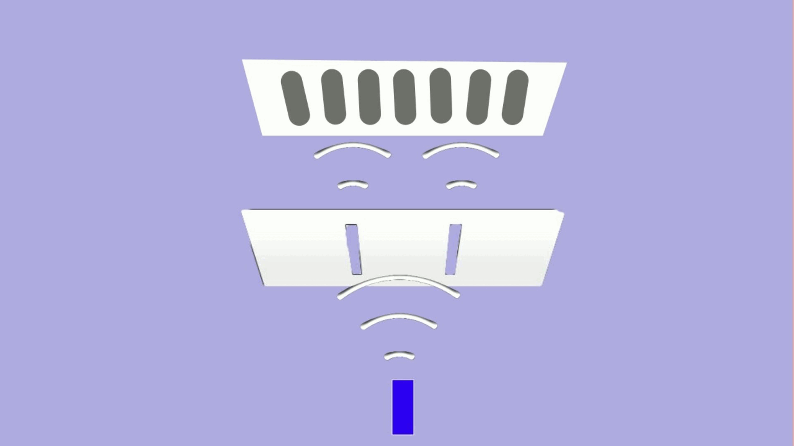
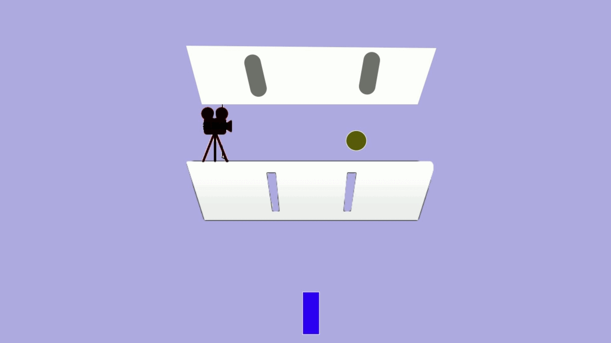
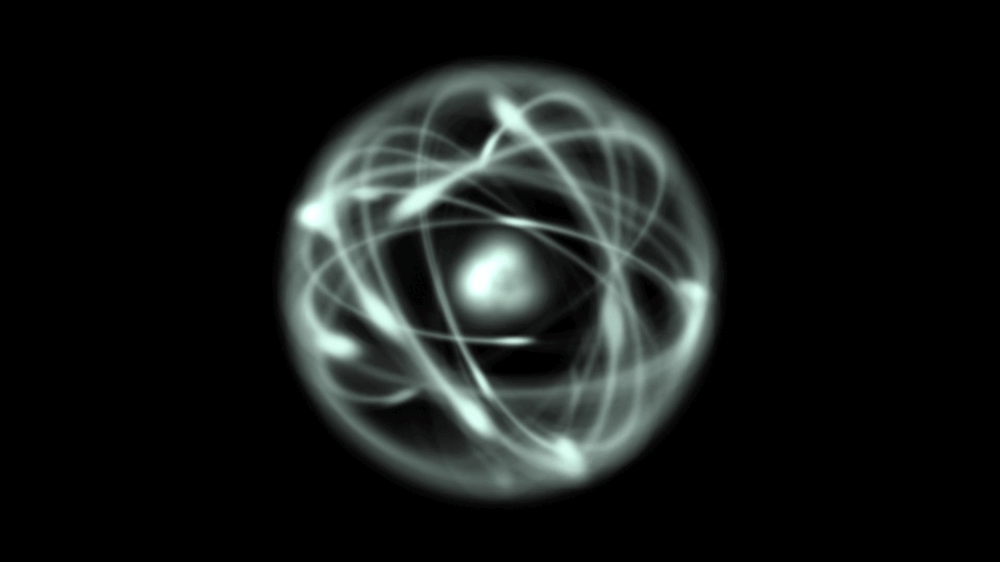
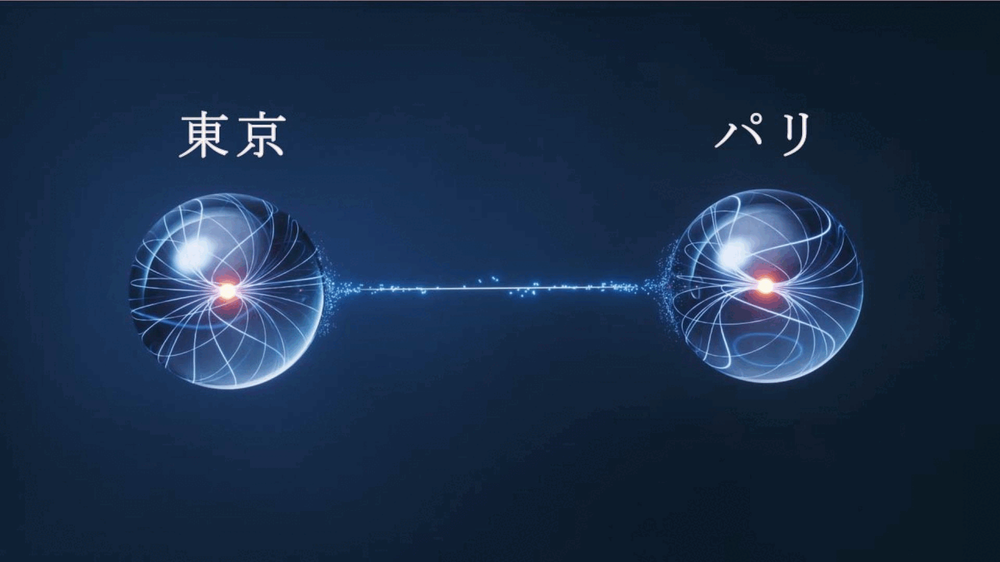
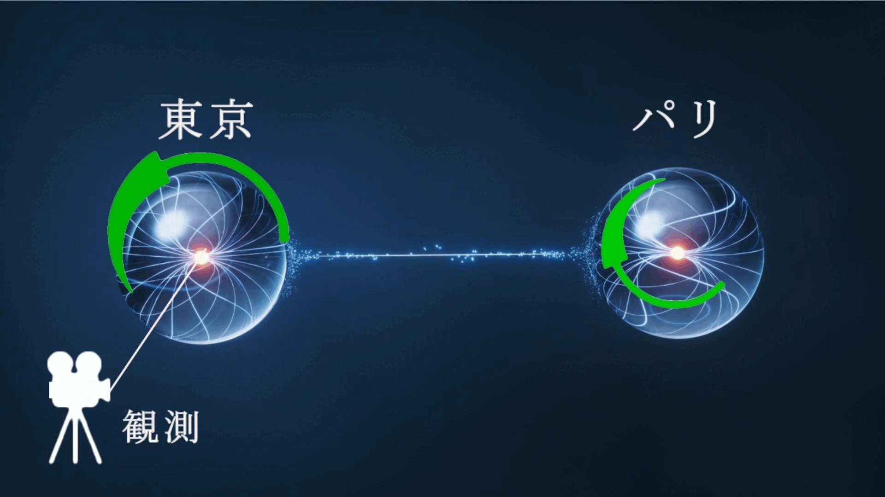
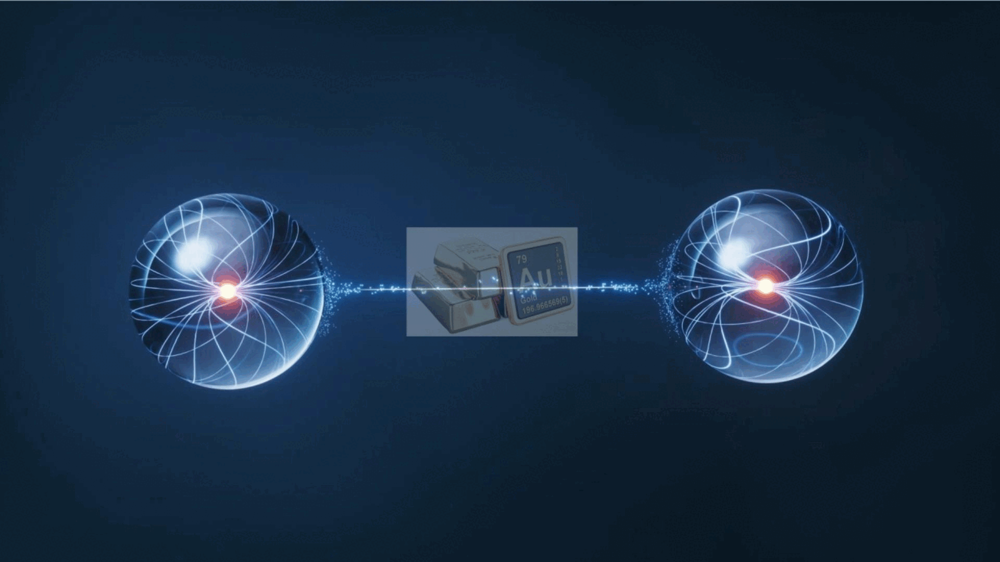

Tibetan Buddhism
(6th century B.C.)
| Buddha |
(2th century A.D.～)
| Nagarjuna | “The middle way” 【Madhyamaka】 Action and misery arise from mental fabrication. However, mental fabrication through language stops when you stop thinking and your mind dissolves into emptiness.When mental fabrication ceases, action and misery also cease. When action and misery cease completely, there is Nirvana. 【Two truths】Nagarjuna does not completely deny language. He then goes on to discuss the two truths. 【The ultimate truth】 the truth that is beyond duality and cannot be explained in words is called ultimate truth. To experience ultimate truth, you have to stop thinking and let your mind dissolve into the emptiness that transcends duality. 【The conventional truth】 The truth explained in words is called the truth of worldly convention. Just as Buddha used language to teach,language is necessary to explain the truth. 【Middle way】In this way, Nagarjuna explains that both the conventional truth and the ultimate truth are necessary. | |
| Asanga | The Founder of the Yogacara school of Buddhism 【the Yogacara school】 Emptiness is an important concept, but the Yogacara school postulates the presence of mental energy. | |
| Vasubandhu | "Abhidharma", "Discourse on the Pure Land" Asanga is his older half-brother. |
(7th century A.D.～)
| Candrakīrti | "Madhyamakavatara (Entering the Middle Way)" Indian Buddhist monk in Nalanda | |
| Shantideva | "Bodhicaryavatara (A Guide to the Bodhisattva's Way of Life)" Indian Buddhist monk in Nalanda | |
(8th century A.D.～)
| ≪Guhyasamaja tantra≫ | 【the six branches of the yoga】 retraction,contemplation,life-energy control, endurance, mindfulness, samadhi 【the Noble tradition】 ”The Five Stages” of Nagarjuna | |
| ≪Samvara and related tantras≫ | 【Vajravarahi】 a female deity which has its origins in the Indian belief in Shakti (kundalini). 【the four descending joys】Generating the Chandali fire below the navel melts amrita (nectar) in the head, which then drips down, accompanied by the four descending joys. 【the four ascending joys】 Innate wisdom awakens below the navel and rises along the spine with the non-dual co-emergent joy. | |
| Saraha | "Dohakośa" one of the Mahasiddhas | |
| Padmasaṃbhava | Legendary figure who brought esoteric Buddhism to Tibet and is considered the founder of the Nyingma school. |
(11th century A.D.～)
| Atisha | The great Indian Buddhist master who brought Buddhism to Tibet. "Bodhipathapradīpa (The Lamp for the Path to Enlightenment )" This short text is the root of the Tibetan Buddhist training system (Lamrim), "Lojong" Lojong is a method of training the mind, and it is still an important teaching in Tibet. | |
| Tilopa | "Mahamudra Song" 【Six Precepts or Words of Advice】 "Don't recall. Don't imagine. Don't think. Don't examine. Don't control. Rest." | |
| Naropa | He was a disciple of Tilopa, and after overcoming many trials, he attained siddhi. | |
| Marpa | He was a disciple of Naropa, and he brought esoteric teachings (the six yogas of Naropa and Mahamudra) from India to Tibet. | |
| Milarepa | "The Hundred Thousand Songs" A disciple of Marpa, he attained siddhi after overcoming many trials. 【the Kagyu school of Tibetan Buddhism】 The six yogas of Naropa and Mahamudra are the central teachings of the Kagyu school. | |
| 【Mahamudra】the stage of One-Pointedness(gathering mind), the stage of Non-Elaboration(approaching emptiness), the stage of One-Taste(uniting mind with emptiness), the stage of Non-Meditaion(remaining in this state) 【The Six Yogas of Naropa】 the yoga of the mystic heat (tummo), the yoga of clear light, the yoga of the magic body, the yoga of dream, the yoga of consciousness transference (phowa), and the yoga of the intermediate state (bardo) | ||
(14th-15th century)
| Tsongkhapa | "The Great Treatise on the Stages of the Path to Enlightenment (lam rim chen mo)" "The Great Exposition of Secret Mantra (sngags rim chen mo)" "Brilliant Illumination of the Lamp of the Five Stages " He founded the Gelug school. 【the Gelug school of Tibetan Buddhism】 Both the exoteric and esoteric teachings are emphasized. The esoteric teaching consists of the creation stage and the perfection stage. | |
| Longchenpa | 【the Nyingma school of Tibetan Buddhism】 Longchenpa unified the teachings of the Nyingma school into a single theoretical system. The most profound teaching of Dzogchen was its central axis. 【Dzogchen】A method of training to stay in rigpa all the time. Rigpa is the knowledge of the ground that has three aspects: Essence(emptiness), Nature(luminosity), Compassion(energy). |
| The philosophy of the Buddha |
| Twelve Links of Dependent Origination | The twelve links are the cycle of suffering known as samsara. Each of the twelve links becomes the cause of the next link. 【Ignorance】 Ignorance is the unknowing mind that does not understand the truth that attachment is the root of all suffering. →【Choices】 Choices are intention regarding, sights, sounds, smells, tastes, touches, and thoughts. →【Consciousness】 The Buddha stated that consciousness is dependently originated and impermanent and is not the true self. →【Name-and-form】 Name-and-form refers to mental aggregates and physical body. →【Six sense fields】 The six sense fields are sense organs including the eyes and ears. →【Contact】 Contact is the meeting of the sense organs with their corresponding objects, such as sights, sounds, odors, tastes, and tactile sensations. →【Feeling】 This includes pleasant, painful, and neutral feelings. →【Craving】 Desire and aversion is born. →【Grasping】We become attached to things. →【Continued existence】 Continued existence is existence in the material realm, the realm of desire, and the formless realm. This is how karma is accumulated. →【Rebirth】Through accumulated karma, you are reborn into another body. →【Old age and death】 In the next life, suffering such as old age and death will be repeated. The Buddha also taught a practice of eliminating the chain of the twelve links to end suffering. You extinguish grasping. Even if things appear enchanting, they will eventually bind you and bring suffering. You observe the drawbacks of the things to which you are attached and see them as unwholesome. By extinguishing grasping, the other links are extinguished. Furthermore, you extinguish consciousness. Through meditation by neither intending nor planning, you completely cut off the conditions for the arising of consciousness. In this way by extinguishing consciousness, the other links are extinguished. Furthermore, you extinguish choices. By practicing the Eightfold Path, you extinguish karma. The right path that arises from truth does not create karma. By extinguishing choices, other causal links are extinguished. |
| Four Noble Truths | After attaining enlightenment, the Buddha taught the Four Noble Truths and the Eightfold Path in his first sermon. The Four Noble Truths represent four fundamental realities. 【The Truth of Suffering】 All existence in this world is suffering. Even worldly pleasures eventually bind the mind and bring about pain. 【The Truth of the Cause of Suffering】 The root cause of suffering is attachment—specifically to desires, fixed concepts, and the ego. 【The Truth of the Cessation of Suffering】 By severing these attachments that cause pain, one can reach the state of Nirvana, which is free from all suffering. 【The Truth of the Path】 The specific method to achieve this is through the practice of the Eightfold Path. |
| Eightfold Path | These are the eight guiding principles for conduct. By acting rooted in the truth, one can avoid creating bad karma, sever attachments, and extinguish suffering. 【Right View】 Having the correct understanding based on the Four Noble Truths. 【Right Intention】 Possessing the right will to eliminate suffering and aspire for liberation. 【Right Speech】 Using truthful and wholesome words. Refraining from backbiting, slander, and harsh language. 【Right Action】 Engaging in ethical conduct. Refraining from taking life, stealing, and other harmful acts. 【Right Livelihood】 Earning a living in an honest and ethical way. 【Right Effort】 Making the proper spiritual effort. The Buddha taught the Four Right Exertions as the four aspects of this effort. 【Right Mindfulness】 Maintaining the correct awareness that all things are impermanent. The Four Foundations of Mindfulness were taught as the method for this practice. 【Right Concentration】 Unifying the mind into a single point to make it unshakable. The Four Dhyanas were taught as the process to achieve this. |
| Five Aggregates | The Buddha explains that a person is constituted by the Five Aggregates. 【Form】 physical body 【Feeling】 sensation 【Perception】 the process of conceptualizing and labeling the information received 【Choices】 intentions 【Consciousness】 awareness The Buddha teaches that the Five Aggregates, such as the body and consciousness, are also temporary, impermanent things that arose through Dependent Origination, and are not one's true self. The Buddha explains that the Five Aggregates are like a heavy burden. The mind clings to these components, binding itself and inviting suffering. The clinging to the ego and the self-centeredness arising from it are the source of anguish. |
| Four Foundations of Mindfulness | (The practical method of Right Mindfulness within the Eightfold Path.) The Buddha teaches the Four Foundations of Mindfulness as a meditation method for shedding the burden of the Five Aggregates. The Four Foundations of Mindfulness consist of four contemplation practices. 【Mindfulness of the Body】 a meditation method where one observes the body as it truly is. One realizes that the physical body is impermanent—it will eventually age and decay. By doing so, one lets go of attachment to the body. 【Mindfulness of Feelings】 a meditation method where one observes feelings as they truly are. One realizes that feelings, even if they seem attractive, generate suffering when clung to. One then lets go of attachment to them. 【Mindfulness of Mind】 a meditation method where one observes the mind as it truly is. Observing one's mind reveals that it arises and ceases, unstable and impermanent. One realizes that the mind, too, is impermanent and without inherent substance. 【Mindfulness of the Dhamma】 the observation of the workings of the mind and the Buddhist teachings that constitute their principle. Through this practice, one comes to understand the principle of Dependent Origination—that all phenomena arise in relation to other factors and are devoid of any inherent, permanent self-essence. Consequently, one cuts off attachment to all things. |
| The Buddha's last Sermon | In his final sermon before passing away, the Buddha taught: "Be a lamp unto yourselves, be your own refuge; take the Dhamma as your lamp and your refuge." He then taught the Four Foundations of Mindfulness as the concrete practice to achieve this. First, practice the Four Foundations of Mindfulness in daily life to free the mind from attachment to the Five Aggregates, such as the body and consciousness. As a result, the mind connects with the truth that lies beyond duality. And then, the mind becomes unshakable, and suffering ceases. The Buddha teaches to rely on that mind as your island. |
| Four Right Exertions | (The four aspects of Right Effort within the Eightfold Path.) 【Discard evil】The effort to abandon unwholesome states that have already arisen. 【Prevent evil】The effort to prevent unwholesome states that have not yet arisen from arising. 【Create good】The effort to arouse wholesome states that have not yet arisen. 【Cultivating Good】The effort to maintain wholesome states that have already arisen, to further practice them, and to bring them to full development. |
| The Four Dhyanas | (The four processes of Right Concentration within the Eightfold Path.) To concentrate the mind, one must first detach it from various attachments and worldly desires. Then, through meditation, one progresses step-by-step toward a state of deep inner peace. 【The First Dhyana】First, you enter a state of joy and happiness accompanied by directed thought and evaluation. 【The Second Dhyana】Next, you advance to a state of joy and happiness born of concentration, where thoughts subside. 【The Third Dhyana】Next, the surges of intense joy subside, leaving in their place only a sense of quiet and profound happiness. 【The Fourth Dhyana】Next, one moves into a state where even tranquility fades away, and consciousness becomes exceedingly pure. With this crystal-clear mind, one discerns the ultimate truth. |
| Seven Factors of Enlightenment | These factors are considered advanced practices. As you draw closer to enlightenment, these seven elements naturally begin to emerge. When they do, you should strive to cultivate and strengthen them further. By doing so, you will be able to deepen your awakening even more. 【Factor of Mindfulness】You will become able to maintain a constant state of mindfulness. This allows you to never forget the true Dharma. 【Factor of Investigation of Doctrine】You will develop the ability to gain insight into the true nature of things and discern what is essential. 【Factor of Energy】You will become able to direct your efforts without wasting energy on trivial matters, focusing only on what is truly important. 【Factor of Joy】A sense of joy will naturally arise within you. 【Factor of Tranquility】You will be liberated from various attachments, and your body and mind will feel light and relaxed. 【Factor of Concentration】Your mind will become deeply focused and will no longer be disturbed by your surroundings. 【Factor of Equanimity】you will become free from any attachment to the objects of your perception. |
| Five Faculties, Five Powers | The Five Faculties are the five essential abilities needed to attain enlightenment. You develop these faculties through practice. As they grow, they transform into forces that can influence the outside world, becoming the Five Powers. 【Faculty of Faith】The ability to believe is the "Faculty of Faith." By nurturing this root until it becomes a true inner strength, it evolves into the "Power of Faith." 【Faculty of Energy】The ability to apply oneself with diligence is the "Faculty of Energy." By nurturing this root until it becomes a true inner strength, it evolves into the "Power of Energy." 【Faculty of Mindfulness】The ability to stay mindful without distraction is the "Faculty of Mindfulness." By nurturing this root until it becomes a true inner strength, it evolves into the "Power of Mindfulness." 【Faculty of Concentration】The ability of mental concentration is the "Faculty of Concentration", through which the mind becomes unshakable. By nurturing this root until it becomes a true inner strength, it evolves into the "Power of Concentration." 【Faculty of Wisdom】The ability to connect with the Truth is the "Faculty of Wisdom." Through it, the mind dissolves into emptiness and you are freed from all attachments. Then, you will see the truth with unclouded eyes and the wisdom to walk the right path will naturally arise within you. By nurturing this root until it becomes a true inner strength, it evolves into the "Power of Wisdom." |
| Four Bases of Spiritual Power | In ancient times, the Buddha and his disciples possessed supernatural abilities known as spiritual powers. These powers manifest when one enters a state of deep meditation. The Four Bases of Spiritual Power are four methods of practice used to perfect that state of deep meditation. 【Desire】The source of mental concentration is desire. By cultivating right desire, you can enhance your state of meditative absorption. 【Effort】The source of mental concentration is energy and effort. By putting in effort, you can enhance your state of meditative absorption. 【Mind】The source of mental concentration is a pure mind, free from wandering thoughts. By avoiding evil or unwholesome states and letting go of attachments, you can control your mind and enhance the power to stay focused on a single point. 【Investigation】The source of mental concentration is a mind connected to the truth. By observing the truth with a focused mind and maintaining that connection, you can further deepen your state of meditative absorption. |
| Lamrim | Tibetan Buddhist training system (the integrated thought of Theravada Buddhism, Mahayana Buddhism, and Esoteric Buddhism) |
| three kinds of persons | 【the lesser people】those who seek a good next life in samsara 【the middle people】those who seek liberation from samsara for themselves 【the supreme people】those who seek complete liberation to save sentient beings from suffering |
| Liberation | Even with a good rebirth in the next life, suffering will recur. It is important to strive for enlightenment and liberation from samsara, even if initially only for oneself. |
| bodhichitta | Bodhichitta is a mind that desires to save sentient beings from suffering. Fundamentally, we are all connected. When you arouse bodhichitta, invisible merit fills the realm in space. |
| 【Three Trainings】 | These are the teachings of Theravada Buddhism, a simplified version of the Buddha's Eightfold Path. |
| ethical conduct | Right Speech, Right Action, Right Livelihood |
| Meditation | Right Effort, Right Mindfulness, Right Concentration |
| Wisdom | Right View, Right Intention |
| 【Six Paramitas】 | Mahayana Buddhist practices that add generosity, patience, and diligence to the three trainings of ethical conduct, meditation, and wisdom. Strive daily to practice the six Pāramitās: generosity, morality, patience, diligence, meditative concentration, and wisdom. By continuously practicing these six paramitas, one can be liberated from suffering, and ultimately, one can attain nirvana. |
| Generosity | Practice doing good for others. You put the bodhicitta into action through Generosity. This generates a continuous stream of merit. This practice can be as simple as giving a meal to someone in need. Moreover, spiritual giving, such as spreading teachings, generates even greater merit. |
| Morality | By upholding precepts, you prevent negative actions, speech, and thoughts, thereby protecting yourself from creating negative karma. 【mindfulness】 This is about remembering and not forgetting the precepts you have vowed to uphold. 【vigilant introspection】 This is about observing whether your actions are in alignment with the precepts. |
| Patience | This is the practice of enduring and restraining anger. Here are some ways to practice patience: ①Even if I feel anger towards someone with a particular nature, I think it is their essence. And getting angry at it is like getting angry at a fire for being hot, and I think that's unreasonable. ②I believe that the malice of others towards me cannot harm me, neither in this life nor the next. When I think that way, I stop worrying about it. ③As a seeker of nirvana, I cannot be bound by wealth and honors. This is why even when others harm them, I feel no anger towards those people. ④In the practice of patience, an enemy who brings me harm is very important. A teacher cannot give us the opportunity to experience the practice of patience. That is why I believe an enemy is a greater being than a teacher. |
| Diligence | This is the practice of joyfully making an effort for the good. Here are four forces needed to practice diligence. 【The force of aspiration】 It is the force that arises from understanding and being convinced that one's efforts are truly good. 【The force of steadfastness】 It is the force to complete a practice without giving up. To achieve this, it's important to thoroughly consider whether you can continue the practice before you even start it. 【The force of Joy】 This is the force to find joy in the effort itself. If the practice is truly good for you, you should feel joy in the effort itself. 【The force of relinquishment】 When your strength is exhausted, you temporarily stop and rest. This allows you to practice even better afterward. By doing this, you become skilled in your practice. |
| Meditative concentration | This is the practice of focusing the mind. Our minds are attached to various things. And the attachment to the self, in particular, leads to violence, fear, and suffering. To concentrate the mind, you must first free it from the bondage of these attachments. Then, it's necessary to make repeated efforts to focus the mind on a single point. Through this, you can attain supernormal powers. |
| Wisdom (Prajnaparamita) | 【dependent origination】
Dependent origination means that all phenomena lack an inherent, independent existence; they arise only in relation to one another. Similarly, you understand that your own essence is empty of any true substance and that your existence manifests through your relationships with others.
The wisdom (Prajna) is this understanding of dependent origination.
Furthermore, this is not just a conceptual understanding of emptiness. Instead, you directly experience emptiness through meditation. By completely silencing the ceaselessly searching intellect, you have an insight that transcends thought—the experience of emptiness. This is how you master emptiness.
When you master emptiness, the mind will no longer be attached to impermanent things. Then, the mind becomes unshakable, enters a state of peace, and suffering ceases.
【Tsongkhapa(Gelug School) Lamrim】 Focus of Insight : Understanding emptiness through logical analysis. 【Gampopa (Kagyu School) Lamrim】 Focus of Insight : Direct experience | |
| Means | All but Prajnaparamita are a means, or temporary means, of attaining wisdom. To attain wisdom, these practices are also necessary. First, through means, free your mind from the bondage of attachment and concentrate. Then, through prajna, dissolve the mind into emptiness. Both means and prajna are necessary. With only one of the two, the mind remains bound by attachment. | |
| 【Ten Bhumis】 | The ten stages that a bodhisattva must go through before he can attain nirvana. By practicing the six paramitas, the bodhisattva's mind approaches the truth and is transformed. The Ten Bhumis serve as guideposts for the bodhisattva on the path to nirvana. | |
| Perfect Joy (The First Ground) | At this stage, the Bodhisattva excels in Generosity, the practice of doing good for others. As a result, they accumulate unseen merit. At this stage, the Bodhisattva's mind becomes filled with great joy. | |
| The Stainless (The Second Ground) | At this stage, the bodhisattva excels in morality. By living according to the precepts, their actions, words, and mind are purified, and their afflictions are cleansed. | |
| The Luminous (The Third Ground) | At this stage, the Bodhisattva excels in patience by enduring harm from others. By persevering, they connect with the truth deep within their heart, giving rise to the light of wisdom. By restraining anger, they stop sowing the seeds of their own suffering. | |
| The Radiant (The Fourth Ground) | At this stage, the Bodhisattva excels in diligence, which is the practice of persistent effort. As they strive to do good, they accumulate invisible, positive karma. This effort also clears away the clouds over their minds, allowing the light of wisdom in the depths of their heart ,to shine with even greater brilliance. | |
| Hard to Conquer (The Fifth Ground) | At this stage, the bodhisattva excels in meditative concentration by freeing their mind from attachment and focusing it. They grasp the core teaching of the Buddha that attachment is the root of all suffering. This stage is named "Hard to Conquer" because not even all the maras combined could mislead the Buddha. | |
| The Manifest (The Sixth Ground) | At this stage, the bodhisattva realizes the truth of dependent origination: that all things lack a fixed self-nature and arise in relation to others. By dissolving their concentrated mind into emptiness, they extinguish all afflictions and suffering. | |
| Gone Afar (The Seventh Ground) | At this stage, the Bodhisattva excels in upaya-paramita, or the perfection of skillful means. This is the method of reaching the truth, through the most suitable means. By practicing both upaya-paramita and prajna-paramita, they can, moment by moment, dissolve their mind into the state of emptiness. | |
| The Immovable (The Eighth Ground) | At this stage, the Bodhisattva's mind is always dissolved into emptiness, and can no longer be moved from it. As a result, all mental afflictions are exhausted. | |
| Perfect Intellect (The Ninth Ground) | At this stage, all the abilities of the Bodhisattva become completely pure. Their wisdom and the power to preach the Dharma at will are also perfectly clear without a trace of impurity. | |
| Cloud of Dharma (The Tenth Ground) | At this stage, the bodhisattva receives supreme empowerment from all the Buddhas. In order to cultivate the good in all sentient beings, they will pour down compassion and wisdom just as a rain cloud pours down rain. | |
| Esoteric Buddhism | There is no fault in learning or practicing esoteric Buddhism if one receives the master's empowerment or genuinely seeks to understand the truth. |

| channels | The upper end of the central channel extends to the top of the head and the lower end of the central channel extends to the genitals.The left and right channels join with the central channel at their upper ends at the right and left nostrils. The left and right channels join with the central channel at their lower ends below the navel. |
| winds | The winds are akin to the concept of prana. They circulate in the left and right channels and in the smaller channels throughout the body. The winds are also spread outside the human body. The winds are the vehicle of your mind, and the winds are attached and bound to people and things outside of you. The first goal of Tibetan esoteric Buddhism is to bring winds into the central channel, which is normally hollow. |
| chakras | The winds that enter the central channel can be stored in the chakras. The chakras are located in the head, throat, heart and navel. |
| indestructible drop | There is the indestructible drop in the center of the heart chakra. The indestructible drop is a small spherical grain, which is white in the upper half,and red in the lower half. It is a combination of four elements: the white drop of the father's origin, the red drop of the mother's origin, the very subtle wind, and the very subtle mind, which is superconsciousness. |
| drops | After a person is born, part of the white drop of the indestructible drop moves to the head, which then becomes the center of the white drop. Likewise, part of the red drop of the indestructible drop moves to the navel, which becomes the center of the red drop. The drops can also be moved through the central channel with the yoga of the mystic heat (Tummo). |
| goal | The goal of Tibetan esoteric Buddhism is first to gather the winds into the central channel, and then to bring the winds into the indestructible drop in the heart. Then, when the winds unite with the indestructible drop completely, the mind, enter into the clear light. If we compare the mind, central channel, wind, and drop to a carriage, the mind is the rider, the central channel is the road, the wind is the horse, and the drop is the rider's food. With the help of the wind, the mind moves through the central channel to the indestructible drop in the heart. and with the help of the drop, the mind can be more closely united with the emptiness. | |
| bliss-void union | Bliss-void union is the idea that bliss and emptiness are inseparable. It emphasizes that meditating on emptiness alone or bliss alone is insufficient. But emptiness and bliss must be connected. The subjective mind and emptiness, which is beyond duality, do not intersect like milk and water. But through bliss, the mind can realize emptiness. And through bliss, the mind can strengthen the connection between the mind and emptiness. | |
| EVAM | The word EVAM is used to describe bliss-void union. E represents emptiness. VA represents bliss. M represents drops, the product of the union of emptiness and bliss. | |
| the emptiness of bliss-void union | Buddhism explains that things exist in dependence on other things. And it explains that all things are insubstantial. This is called dependent co-arising. The winds are the vehicle of our mind. And the winds are attached, and bound to people and things outside of you. And suffering arises from our dependence on things that are insubstantial and impermanent. Even after the death of the physical body, our mind is still caught in attachment and repeats reincarnation. First you have to get rid of various attachments. Then the mind, or the wind, is dissolved into the central channel, which is usually hollow. When the wind enters the central channel, the mind approaches emptiness, which transcends the duality of subjectivity and objectivity. And one becomes less attached to things. | |
| the bliss of bliss-void union | When the wind is dissolved in the central channel, the inner fire burns below the navel. The fire melts the white drop in the head, and the white drop, or amrita, drips down through the central channel. And with the drop, bliss is born. And through the bliss, the wind, or the mind, strengthens its connection with emptiness. |
| Tummo | The first step in the practice is to inhale and send the winds through the left and right channels below the navel. Then, hold the breath and compress the winds below the navel, allowing them to enter the central channel, which is normally hollow. Imagine a fire being ignited and burning below the navel by the wind. In addition, by contemplating sexual intercourse with the visualized consort, the fire below the navel burns more and more.The heat of energy melts the white drop in the head. And the white drop drips down through the central channel. The white drop is also called amrita. When the winds enter the central channel, which is usually hollow through the practice of the mystic heat, you can proceed to the other five practices of the Six Yogas of Naropa. |
| Clear Light | When the winds entering the central channel completely dissolve into the indestructible drop in the heart, the winds, that is, the mind, enter into the clear light. ①To enter the clear light, there is a method of practice in which you must not have any thoughts. ②Before falling asleep, imagine Tibetan letters in the center of your heart chakra. Then dissolve yourself into the Tibetan letters. The winds gather in the place where the mind is concentrated. So the winds gather around the indestructible drop in the heart. |
| the Illusory Body | The astral body made of the winds arises from the clear light. When a person goes to sleep, the mind approaches emptiness and approaches the clear light. An astral body arises from the clear light. And astral projection becomes possible. Similarly, when a person dies, the mind approaches emptiness and clear light, and a bardo body arises from the clear light, leading one into the afterlife called the bardo. Usually the clear light is like the sun hidden by clouds. And the astral body made of it is incomplete and temporary. But by completely uniting your mind with the clear light, you can create an immortal astral body called the rainbow body. |
| Dream | Dream is the practice of controlling dreams for astral projection or to enter the clear light. ①First, there is the practice of constantly thinking that "this is a dream" even during the day. In this way, even when you are dreaming, you come to realize that it is a dream. In fact, Buddhism teaches that the world is essentially like a dream, without substance. ②The next way to control dreams is to allow the winds to enter the central channel before falling asleep. By keeping the winds, that is, the mind, in the central channel, you can remain conscious even in dreams. ③Tibetan esoteric Buddhism explains that dreams appear in the throat chakra. Then before going to sleep, concentrate on the red chakra in the throat, and collect the winds in the throat chakra. Then, you can control your dreams by imagining the dreams you wish to see. |
| PoWa | In Tibetan esoteric Buddhism, there are nine openings in the body. They include the eyes, nose, mouth, and so on. And at the time of death, when the mind leaves the body through any opening the dead person enters the intermediate state and repeats reincarnation. And at the time of death, when the mind leaves the body from the top of the head through the central channel, the dead person enters Nirvana and is liberated. Therefore, when death is imminent, PoWa is done. The practitioner meditates on the mind repeatedly diving from the heart to the Pure Land above the head. By doing so, this helps the mind to move through the crown at the time of death. |
| Bardo | ①The process of dying brings the mind closer to emptiness, and there will be visions of white, then there will be visions of red, and then there will be visions of black. Then you will approach the clear light. If you have practiced during your lifetime, you will recognize the clear light at that time. Then, enter into the clear light and stay as long as you can. As a result, the mind will leave the crown, and you will be liberated. ②If not, a bardo body arises from the clear light of death. Then, one enters the afterlife called the bardo until rebirth. This bardo body is incomplete, and it will eventually disappear, and you are destined for reincarnation. So when you enter the bardo, realize that you are already dead, and cut off the illusions that appear. Then contemplate that your body is the deity. Meditate on emptiness. Then, when the clear light appears, dissolve into the clear light. And you can create an immortal astral body from the clear light. |
| one-pointedness | This is the stage where you concentrate and focus your mind on yourself. Tilopa teaches that you must sever attachments to anger, desire, and egoism at their roots and conquer the distractions of the mind. First, by freeing your mind from external constraints, you can focus your mind on yourself and perceive it as energy. |
| non-elaboration | Once you have focused your mind on yourself through single-pointed concentration, you can gaze upon your mind with your own mind, ignoring any thought, and dissolve your mind into emptiness . This is your natural state, so remain relaxed there. |
| one-taste | When the mind is completely merged into emptiness, one experiences enlightenment, and the distinction between subject and object disappears (the union of child enlightenment and mother enlightenment). This is called the state of Mahamudra. |
| non-meditation | You will attain the state of Mahamudra without meditating. There will be no distinction between meditation and post-meditation. You will be liberated from the cycle of reincarnation. |
| 【the creation stage】 | The creation stage is the practice of meditating on the mandala. You meditate on the mandala as yourself and as the deity. There are four kinds of mandala meditation:
①The way of meditating on the mandala, by classifying each element of the mandala into 100 clans.
②The way of meditating on the mandala as the five Tathagatas. |
| 【the perfection stage】 | In the perfection stage, you manipulate the winds. The perfection stage is done in steps in the order of body isolation, speech isolation, mind isolation, the magic body, the ultimate clear light, and communion. |
| body isolation | The purpose of body isolation is to bring the wind into the central channel, which is normally hollow. The training method for bringing the wind into the central channel is to meditate on a drop at the lower door of the central channel, tip of the genitals. In addition, there is a way to meditate on the mandala within the drop at the lower door of the central channel and you meditate on the mandala as yourself. By meditating on the drop at the lower door of the central channel and keeping the mind on that drop, the winds flowing in the left and right channels, -that is, the mind- are collected in the central channel. This allows the winds to enter the central channel, which is normally hollow. When the winds enter the central channel, you feel bliss. |
| speech isolation | There are knots above and below the heart chakra. They block the winds. The purpose of speech isolation is to open the knots above and below the heart chakra and to gather the winds around the indestructible drop in the heart. ①The first method of practice is to meditate on the Tibetan letter A in the heart. The winds gather where the mind is centered, so, by meditating on the letter A as the indestructible drop in the heart, the winds gather in the heart. ②The next method of practice is the vajra recitation. What the winds manifest at the level of the gross body is the breath. So, the vajra recitation is the practice of consciously manipulating the winds by breathing while chanting the mantra. First, while chanting Om, inhale, and imagine pushing the upper winds down to the center of your heart. Then, while chanting Ah, hold your breath. And imagine holding the winds ,in the center of your heart. And,while chanting Hum, exhale and imagine pushing the lower winds up to the center of your heart. Repeating the vajra recitation opens the knots above and below the heart chakra. |
| mind isolation | The purpose of mind isolation is to dissolve the winds, that is, the mind, into an indestructible drop in the heart. Then the mind approaches emptiness and the clear light. First, through vajra recitation, gather the winds and the drops into the heart center. Then, without thinking, bring the mind closer to emptiness. When the winds dissolve in the heart center,bliss arises.Then, when you feel bliss, unite bliss and emptiness, and you can understand emptiness through bliss. In Tibetan esoteric Buddhism, this is called the wisdom of bliss-void union. When the winds dissolve into the indestructible drop and the mind approaches emptiness, a white vision appears. This is called luminance. Then a red vision appears. This is called radiance. Then a black vision appears. This is called imminence. Then the metaphoric clear light appears. The metaphoric clear light is like the sun hidden in the clouds, and there are still subjective and objective views in the metaphoric clear light. |
| the magic body | The purpose of the magic body is to create the astral body of winds from the metaphoric clear light. The astral body is incomplete and temporary. And it is called the impure magic body because the passions are in the astral body. When you have mastered mind isolation to a certain degree and can approach emptiness during waking hours, you can use sleep to attain the magic body. Before falling asleep, gather the winds and drops in the center of your heart. Then, unite bliss and emptiness and approach emptiness. And, mix the emptiness of waking with the emptiness of sleeping. Then you experience the metaphoric clear light. And the astral body arises from the metaphorical clear light. |
| the ultimate clear light | The purpose of the ultimate clear light is to completely dissolve into the clear light in order to create an immortal astral body. So, when you do astral projection, you should try to make the objective clear light appear. To do this, contemplate that your astral body is the deity. Then, meditate on emptiness. When the objective clear light appears, you should repeat the holistic holding contemplation or the serial dissolving contemplation respectively to enter into the clear light. ①In holistic holding, contemplate the clear light emanating from the heart of the astral body. Then, press the astral body into the clear light from the crown to the feet. ②In serial dissolving, contemplate that the whole world around you is dissolving into the clear light. Next, contemplate the astral body, yourself dissolving into the clear light. When you completely dissolve into the clear light,there are no subjective and objective views. It is called the ultimate clear light. |
| communion | The purpose of communion is to create an immortal astral body from the ultimate clear light. When you dissolve into the ultimate clear light where there are no subjective and objective views, your rebirth-causing compassion is purified. And the pure magic body called the rainbow body arises from the ultimate clear light. The learner's communion is the step where a pure magic body has been created but there is still more to learn. And then, by creating the pure magic body from the ultimate clear light several times, one can be liberated from rebirth. This step is called the nonlearner's communion because there is nothing more to learn. |
The Nine Yanas of the Nyingma School
| Nine Yanas | This system provides a stepwise, nine-stage framework for the process of enlightenment, ranging from the foundational principles of Buddhism to the profound secrets of the Esoteric path. | |
| The Three Sutrayana Vehicles | ||
| Shravakayana | the Buddha's teachings on the Four Noble Truths | |
| Pratyekabuddhayana | the Buddha's teachings on the Twelve Links of Dependent Origination | |
| Bodhisattvayana | the Prajnaparamita Sutras and the Six Paramitas | |
| The Three Outer Tantras | ||
| Kriya Tantra | "Susiddhi Tantra" | |
| Charya Tantra | "Mahavairocana Sutra" | |
| Yoga Tantra | "Vajrashekhara Sutra" | |
| The Three Inner Tantras | ||
| Maha Yoga | the Generation Stage "Guhyagarbha Tantra" | |
| Anu Yoga | the Completion Stage the mastery of the subtle body, including the central channel, winds, and drops | |
| Ati Yoga | Dzogchen |
| Dzogchen | Dzogchen is a central teaching of the Nyingma school of Tibetan Buddhism. The founder of the Nyingma school is considered to be Padmasambhava, a great Indian esoteric ascetic. There are many legends about his magical powers. Later, Longchenpa Rabjampa established the practice system of the Nyingma school. It is a practice system centered on Dzogchen. Dzogchen has three methods of practice: the Semde, the Longde, and the Menngagde. |
| rigpa | In the practice of Dzogchen, the mind is brought closer to the truth that is deep within the mind. Then pure wisdom and clarity appear in the mind. This is the state of contemplation called rigpa. Conversely, the state of ignorance caused by dualism is called ma rigpa. Keeping the mind in the state of contemplation, called rigpa, is the core of Dzogchen practice. |
| The Base | Longchenpa Rabjampa explains that everything manifests from the three aspects of truth: emptiness,clear light, and wisdom.The nature of mind also has these three aspects. This can be explained by comparing the nature of our mind to a mirror. A mirror, being transparent, has the ability to reflect, and because it reflects, it reflects an image. In this way, the aspects of emptiness, clear light, and energy are not separate but interdependent. |
| emptiness | A mirror is pure and transparent in itself. The nature of mind is also pure and transparent in itself. |
| clear light | A mirror has the ability to continuously reflect whatever is placed in front of it. The mind also continues to reflect, and thoughts continue to arise. |
| compassionate energy | The reflection in the mirror is energy. The image in our mind and everything we see is energy. Energy manifests in three characteristic ways, which are known as Dang, Rolpa, and Tsal. |
| 【Dang】 | Dang manifests as energy that is limitless and formless. During a mystical experience, such as entering into clear light, the distinction between subjective and objective disappears. Dang is the true nature of energy. |
| 【Rolpa】 | Rolpa is illustrated by the example of a crystal ball, which, like the mirror, has three aspects. When an object is placed near a crystal ball, the object itself appears to be inside the crystal ball. In the same way, in Rolpa, the energy of the individual appears as a living image in the eye of the mind. For example, in the afterlife, the deities one has worshipped in life may appear as if they were real. This is the manifestation of one's energy as Rolpa. |
| 【Tsal】 | Tsal is a manifestation of energy that is our own energy, but it appears as if it is an external energy. For example, when the sun's rays are reflected off a crystal, a rainbow of rays appears. The primary source of the rainbow light is the crystal itself. Sunlight may be a secondary factor, but it is not the primary cause. This is because the light of the rainbow comes from the crystal. The real world that we perceive as external is actually the manifestation of our own energy combined with external secondary factors. |
| The Path |
| Semde | The Semde is almost identical to the four-stage training method of Mahamudra. |
| Longde | The Longde is a method of practice that allows one to quickly enter into contemplation. There are four methods of Longde. In the first method, you open your eyes and visualize clarity. Then you enter into contemplation. In the second method, without thinking, the mind is brought closer to emptiness. Then you enter into contemplation. The third method is to gently squeeze the muscles of the urethra and anus, which are the lower gates of the body. Then you feel energy and bliss. Then you enter into contemplation. The fourth method is to do all three at the same time. Then you enter into contemplation. |
| Menngagde | The Menngagde is the core of Dzogchen. The practice of the Menngagde includes the practices of Trekcho and Togal. 【Trekcho】The practice method of Trekcho involves abiding in the state of rigpa. When you enter contemplation and your mind dissolves into emptiness, you feel bliss, and your mind becomes clear. You don't need to make any more effort because this is your original state. You simply relax and stay in that state of rigpa. The goal is to remain in the state of rigpa throughout the day. When you can maintain this state during your waking hours, you're ready for the next step, Togal. 【Togal】The practice of Togal aims to further deepen the state of contemplation and enter the clear light. In Togal, by dissolving the mind into the truth deep within, light becomes visible to the eye. When this light appears, you keep looking at it so that it doesn't move, and then that light increases. Different visions appear within this light, and the increase of light reaches its extreme. Ultimately, all phenomena disappear into the truth that creates them, and the distinction between subjective and objective vanishes. |
| The Fruit |
| the three Buddha bodies | When the mind completely dissolves into emptiness, you enter the clear light. You experience the Dang form of energy without subjectivity and objectivity. This frees you from dualistic bondage, allowing you to freely change the form of your energy. From there, you can attain the three Buddha bodies and the rainbow body. |
| Dharmakaya | Dharmakaya is the Dang form of energy. Dharmakaya has no form and no limit. There is no distinction between subject and object. |
| Sambhogakaya | Sambhogakaya is the Rolpa form of energy. By dissolving into the clear light, you can create the body of light you imagine. For example, Amitabha Buddha is a Sambhogakaya. |
| Nirmanakaya | Nirmāṇakaya is the Tsal form of energy. Even after liberation, one is reborn in a physical body to save others. Although Nirmanakaya has a physical body, the mind transcends duality and is liberated. For example, Buddha is a Nirmanakaya. |
| The rainbow body | The rainbow body is a body of light, much like the Sambhogakaya. The key difference is that a Sambhogakaya can only be perceived by those who have the spiritual capacity to see it. The rainbow body, on the other hand, is a body that can actively contact and save other living beings. |
| Namkhai Norbu | Namkhai Norbu is a monk of the Nyingma school of Tibetan Buddhism who has published books and is known for his ability to have lucid dreams. He explains that lucid dreaming is possible through the Dzogchen practice method. Namkhai Norbu teaches us to remain in the state of rigpa both day and night, emphasizing that night practice is often more effective. First, you should practice entering and remaining in the state of rigpa during the day; if you can't enter it during the day, you won't be able to during sleep. If you can stay in rigpa during sleep, you'll be able to have lucid dreams. |
| a white Tibetan A-letter | The white A-letter represents the true nature of the mind. The letter "A" itself represents sound, while its white color represents light. Tibetan Esoteric Buddhism explains that the nature of the mind is empty, yet simultaneously contains light and infinite potential energy. When you visualize the letter "A," you should be able to imagine both the sound "A" and the light simultaneously. |
| the method of practicing during sleep | First, sleep on your back. If you fall asleep quickly in that position, then lie on your side (for men, sleep on your right side; for women, on your left). Then, firmly visualize a white Tibetan A-letter in your heart. If you fall asleep as soon as you get into the sleeping position, visualize a white A-letter on your forehead instead of your heart. Begin by clearly visualizing the white A-letter. As the mind gathers around it, slowly relax. While maintaining the feeling that the white "A" is present, allow it to spontaneously appear. Then, without thinking, let your mind dissolve into emptiness and feel bliss. In this way, you enter the state of rigpa before falling asleep. As your practice progresses, you can maintain the state of rigpa even after you fall asleep, which will allow you to maintain awareness in dreams and experience lucid dreams. When you wake up in the morning, remember the white A-letter. If possible, immediately make the sound "A." This helps connect your daytime and nighttime practice of remaining in the state of rigpa. |
| dreams of clarity | There are two types of dreams: karmic dreams and dreams of clarity. Karmic dreams are the dreams we normally have, arising from a mind scattered and bound by karma. Dreams of clarity, however, originate from the truth deep within the mind. By remaining in the state of rigpa and bringing your mind closer to luminosity during sleep, you will dream dreams that come from luminosity. Specifically, you may dream of future events and past lives, and even receive teachings in your dreams. Furthermore, by remaining in the state of rigpa during sleep and staying lucid, you'll be able to recognize your dreams as dreams. This will enable you to control them, change them into desired dreams, and even perform astral projection. |
| the Tibetan Book of the Dead | The period between death and rebirth in the next life is called the Bardo. The Tibetan Book of the Dead explains how to achieve liberation from rebirth during this bardo state. | |
| bardo of the dying | At the moment of death, the mind and the wind (life energy) gather in the central channel of the body. At that time, the mind approaches the clear light. If the mind can realize the clear light, both the mind and the wind leave the body from the top of the head. Then the mind dissolves into the clear light and is liberated. Otherwise, the mind and wind flow out through other openings like the eyes, mouth, or genitals. You then acquire a bardo body composed of mind and wind. Even in this state, you can achieve liberation if your inherent wisdom awakens and you're able to dissolve into the clear light. | |
| bardo of karmic illusions | If you're not liberated, you'll proceed to the bardo of karmic illusions in your bardo body. During this time, you'll experience awesome, frightening, and terrifying sounds, lights, and rays, which cause great fatigue. Then, various images originally stored in the nature of your mind appear one by one as if they were real. First, with intense light, the peaceful deities depicted in the mandala appear one by one. Don't be afraid of the intense light; instead, concentrate on it. Realize that these peaceful deities are projections of your own energy. Then, meditate on becoming one with all the light and the peaceful deities. In this way, you'll dissolve into the clear light, acquire a body of light, and be liberated. If you're unable to attain liberation by then, in the next stage, wrathful, blood-drinking deities will appear one by one. Whatever appears, remember that it's a projection of your own energy. Realize that these illusions are you, and become one with them. In this way, you'll dissolve into the clear light, acquire a body of light, and be liberated. | |
| bardo of seeking rebirth | If you're still unable to attain liberation, you'll enter the bardo of rebirth. You'll awaken from the unconsciousness caused by the bardo of karmic illusions, and your intellect will gradually become clearer. With the bardo body, you'll be able to reach your desired location simply by thinking about it. You can also see your hometown and your family. However, the bardo body is bound by karma and is a temporary vehicle on the way to rebirth. Depending on the karma from your previous life, you'll see visions of the next life, such as Heaven, the Human Realm, or Hell. But even at this stage, the path to liberation remains open through meditation on your own patron deity, emptiness, and clear light. The Tibetan Book of the Dead explains how to "close the door of the womb" to prevent rebirth. If you absolutely must be reborn, you can still choose the "womb door" for your next life by concentrating your mind. Concentrate on being reborn in the human realm or heaven, and focus on being born into a good family with a healthy body. |
double-slit experimen
|  First, we place a plate with two slits in front of a screen. Then electrons are shot into the slits, one at a time. If the electrons are particles, two lines should be created on the screen. | |
|  In reality, however, an interference pattern was created on the screen. This proves that electrons are waves, not particles. | |
|  Even more surprisingly, when we set up instruments to observe the electron's path, two lines appear on the screen instead of an interference pattern. This demonstrates that a quantum possesses the properties of a wave, but when observed, it exhibits particle properties. This is called wave-particle duality. | |
|  The electrons don't orbit the nucleus; instead, they cover it like a cloud, existing "here and there" simultaneously. This state is called quantum superposition. The position of the electrons is determined only when they are observed. |
quantum entanglement
|  Quantum entanglement is a phenomenon in which quanta are strongly bound to each other. First, in an experiment, a photon of light is split into two photons. Two photons in this quantum superposition state are moved to Tokyo and Paris, respectively. | |
|  And as soon as a photon is observed, the both photons are immediately determined from the superposition state to the particle state: Whenever one particle is measured to be spinning up, the other is always found to be spinning down. Whenever one particle is measured to be spinning down, the other is always found to be spinning up. |
quantum entanglement and dependent co-arising
| Let's examine this phenomenon from the perspective of dependent co-arising in Buddhism. The quantum itself is emptiness because it exists in a state of quantum superposition. | |
|  Attributes are then created by the quantum entanglement of two or more quanta, or by dependent co-arising, as described in Buddhism. | |
 When an observer observes one of the photons, the observer and the two photons become entangled. Only then can the observer perceive that attribute.
When an observer observes one of the photons, the observer and the two photons become entangled. Only then can the observer perceive that attribute.
|
|
| This phenomenal world is a vast web of quantum entanglement, spread out like a spider's web, and the field of the phenomenal world is composed of these entanglements. |